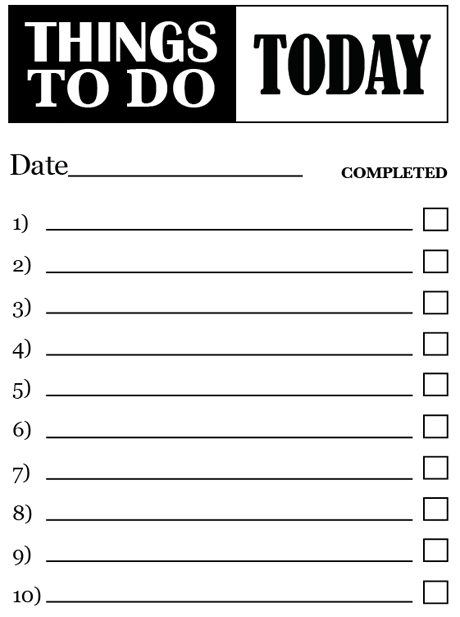

A tale of 2.0 Cowboy
I'm a poor lonesome Cowboy,
and a long way from home...
Loïc Hoguin (@lhoguin), Nine Nines
Confessions
Slow and steady
Life happened
Literally
- Modifying an existing project is hard
- Starting from scratch is easy (at first)
Many changes
- Project core changed the most
- Interface received numerous tweaks
- New testing methodology
- More detailed documentation
HTTP is complicated
HTTP/2 even more so
Lessons learned
Active supervisors
- One process...
- Tells another process...
- To start a third process
- Tells another process...
Solutions
- Let the supervisor act
- Make worker processes supervise
Example: acceptor supervisor
- Basically a supervisor with an
info/3callback- Accept connection
- Spawn a process for that connection
- Supervise the process
- Coming in Ranch 2.0
Example: connection workers
- Process manages connection and related workers
- Connection and request processes in Cowboy 2.0
- Many implications
List of commands

{[
{headers, fin, 100, Headers},
{flow, 64000},
{spawn, Pid, 5000}
], State}.
Examples
gen_statem- Cowboy 2.0 stream handlers
- Cowboy 2.1+ Websocket handlers
Callback chains
#{
middlewares =>
[cowboy_router, cowboy_handler],
stream_handlers =>
[cowboy_compress_h, cowboy_stream_h]
}
Middleware
execute(Req0, Env0) ->
case do_something(Req0, Env0) of
{ok, Req, Env} ->
{ok, Req, Env};
error ->
{stop, Req0}
end.
Stream handler 1/2
data(StreamID, IsFin, Data, State=#state{next=Next0}) ->
{Commands0, Next} = cowboy_stream:data(
StreamID, IsFin, Data, Next0),
fold(Commands0, State#state{next=Next}).
Stream handler 2/2
data(StreamID, IsFin, Data0, State=#state{next=Next0}) ->
Data = do_something(Data0),
{Commands0, Next} = cowboy_stream:data(
StreamID, IsFin, Data, Next0),
{Commands0, State#state{next=Next}}.
Receive loop
loop() ->
receive
Msg ->
do_something(Msg),
loop()
end.
Loop handlers
- Native support for server-sent events
- Switch to loop handlers from
cowboy_rest - After Cowboy 2.0
Error 3-tuples
{error, Reason}
Reason =
{connection_error,
protocol_error,
'The preface sequence must be followed
by a SETTINGS frame. (RFC7540 3.5)'}
Options map
uri(Req :: cowboy_req:req()) -> uri(Req, #{})
uri(Req :: cowboy_req:req(), Opts) -> URI :: iodata()
Opts :: #{
scheme => iodata() | undefined,
host => iodata() | undefined,
port => inet:port_number() | undefined,
path => iodata() | undefined,
qs => iodata() | undefined,
fragment => iodata() | undefined
}
read_body(Req :: cowboy_req:req())
-> read_body(Req, #{})
read_body(Req :: cowboy_req:req(), Opts)
-> {ok, Data :: binary(), Req}
| {more, Data :: binary(), Req}
Opts :: #{
length => non_neg_integer(),
period => non_neg_integer(),
timeout => timeout()
}
Required values
Use := instead of =>
Better tests

Standards compliance
For RFCs, at least one test per relevant MUST/SHOULD.
Document in the test suite what couldn't be tested.
Features
Every function, argument, option must have a test.
Some tips
- Unit tests are not interesting
- Always run test cases in parallel
- Short, successful tests must not output errors
- Test cases must be documented
Better docs

Taking lessons from PHP
Highlights
- One (man) page per module
- One (man) page per function
- Description, arguments, return value, changelog, examples...
Cowboy 2.0+
When?
- Cowboy 2.0-rc.1: Summer 2017
- After OTP 20 is released
- Cowboy 2.0: 2017
- Requires Erlang/OTP 19+ (sorry!)
What's left?
- Return multipart headers as a map
- Constraints 2.0
New users
- RabbitMQ (1.1, for now)
- Zotonic
- Barrel
Related projects
- Ranch 1.4: Out now!
- Gun 1.0: 2017
- Cowlib 2.0+: Adding documentation
- Erlang.mk: Rolling release, keep on rollin'
- New project! Looking Glass
Looking Glass
- Next-gen profiler for RabbitMQ
erl_tracerNIF- LZ4 compression of trace files
- Cachegrind output
- Really, really fast
- https://github.com/rabbitmq/looking-glass
Cowboy 2.1+
- Features cut from 2.0 added back
- More features (related to standards)
- Improve interface with backward compatibility
- Fix bugs, add tests, become a legend
And eventually release Cowboy 3.0
After Cowboy 2.0
Finally build that REST framework
Make (the true) REST easily accessible